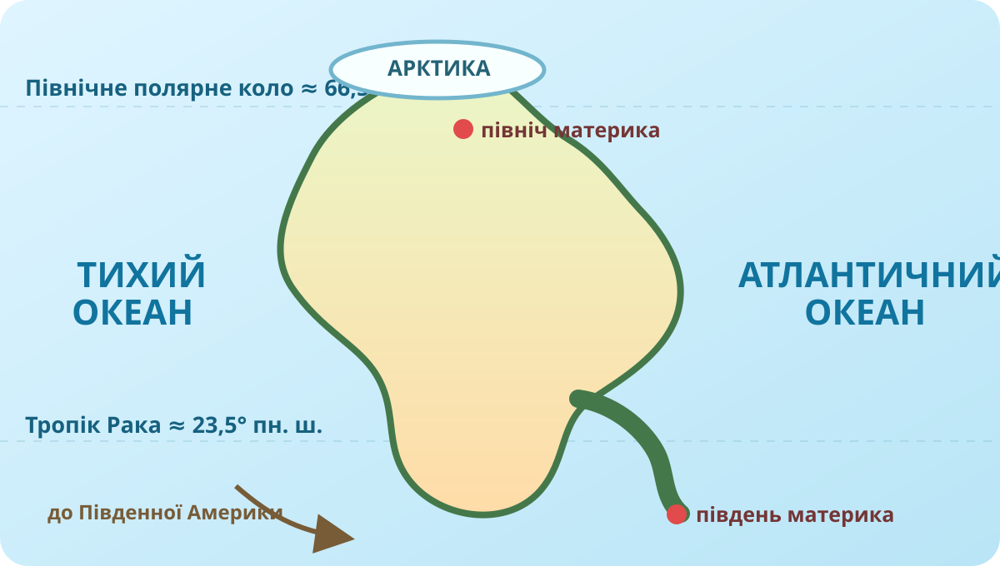

Гіпотеза: що тут «вирішує» положення?
1Передбачте
Якщо материк простягнувся від високих арктичних широт майже до екватора, що має бути правдою?

Спочатку карта. Теорія зачекає.
Збільшуйте й віддаляйте OpenStreetMap. Знайдіть Північний Льодовитий, Атлантичний і Тихий океани, Гренландію, Мексиканську затоку, Карибське море, Берингову протоку, Панамський перешийок.
А. Межі
Назвіть 3 океани, що формують положення материка. Який із них лежить на півночі?
Б. «Мости» й «ворота»
Які два вузькі місця найкраще показують зв’язок Північної Америки з Азією та Південною Америкою?
В. Широтний розмах
Чому на одному материку можуть бути арктичні пустелі, тайга, степи, пустелі й тропічні ліси?
Три способи подивитися на один материк

2Перевірте модель картою
Позначте твердження, які можна підтвердити реальною картою:

3Знайдіть «асиметрію» материка
На USGS-карті порівняйте захід і схід. Де рельєф виглядає вищим і складнішим? Як це може вплинути на доступ повітряних мас з океанів углиб материка?
Підказка після спроби: цей зв’язок докладно розберемо на наступному уроці про тектоніку й рельєф.
Наскільки материк «витягнутий»?
4Оцініть протяжність
Для грубої оцінки візьмемо приблизно 72° широтного розмаху. Один градус широти ≈ 111 км. Обчисліть орієнтовну меридіональну протяжність.
Чому це лише оцінка?
Берегова лінія нерівна, крайні точки залежать від того, чи враховуємо острови, а «північ — південь» не проходить одним меридіаном. Географія любить точність, але ще більше — чесно вказану похибку.
Подивіться коротко — потім сперечайтеся з відео
5Не конспект, а перевірка
Запишіть одне твердження з відео, яке Ви змогли підтвердити картою, і одне, для якого хотіли б знайти додаткове джерело.
Тепер можна відкрити «правила гри»
Спочатку сформулюйте власний висновок одним реченням: «Географічне положення Північної Америки особливе тим, що…»
Широтне положення
Північна Америка лежить переважно в Північній і Західній півкулях та простягається від арктичних до тропічних широт. Звідси — дуже великий набір кліматичних поясів і природних комплексів.
Океанічне оточення
Материк омивають Північний Льодовитий, Атлантичний і Тихий океани. Їхні повітряні маси й течії взаємодіють із рельєфом, тому узбережжя й внутрішні райони відрізняються.
Сусіди
Беринґова протока відділяє Північну Америку від Азії, а Панамський перешийок з’єднує її з Південною Америкою. Це важливо для історії заселення, біогеографії та сучасних транспортних шляхів.
Берегова лінія
Особливо розчленована на півночі та сході: великі острови, затоки, півострови й моря значно збільшують контакт суходолу з океаном.
Доведіть, а не повторіть
Теза: географічне положення Північної Америки створює передумови для дуже великих природних контрастів.
C — Claim
E — Evidence
R — Reasoning
Міні-досьє «Одна точка — один контраст»
Оберіть одну точку Північної Америки: північ Канади/Аляска, Каліфорнія, район Великих озер, Флорида, Мексика або Центральна Америка. У 5–7 реченнях поясніть її положення за схемою: широта → океан/віддаленість від океану → сусідні об’єкти → очікуваний природний контраст.
Електронний підручник §43
§43 «Які особливості географічного положення Північної Америки»
Додаткові геодані
Спочатку ідентифікація, потім тест
Уведіть прізвище, ім’я та клас. Порожні поля тест не відкриють.
Карти та дані
NASA Goddard SVS — Blue Marble 2002; OpenStreetMap; U.S. Geological Survey — North America Tapestry of Time and Terrain; NASA Worldview; Copernicus Data Space. Навчальні матеріали КТП — §43 і рекомендоване відео.